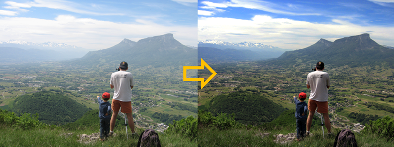
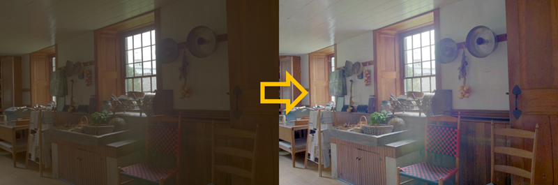
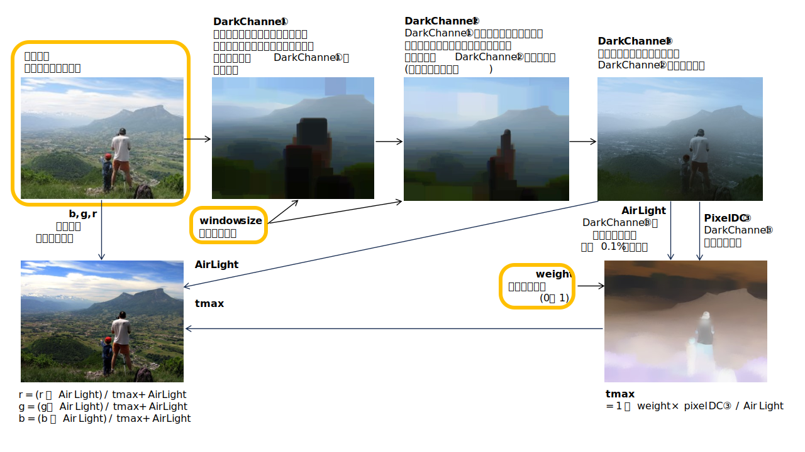
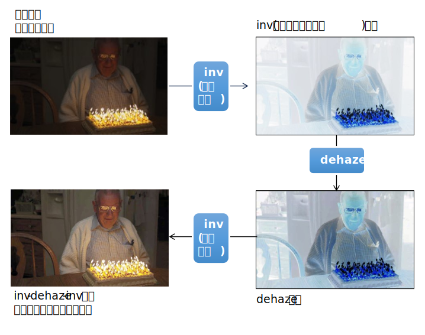

モヤの掛かった画像からモヤを除去した画像を生成します。


ResNet などで有名な Kaiming He さんの Dark Channel Prior の簡易実装です。
Single Image Haze Removal Using Dark Channel Prior
同じく Kaiming He さんのGuided Image Filtering を Dark Channel の精緻化に使っています。
Guided Image Filtering

露出不足の画像を明暗反転するとモヤの掛かった画像のように見える、
という思い付き的な発想で、露出不足改善に dehaze を利用することもできます。
NIGHT VIDEO ENHANCEMENT USING IMPROVED DARK CHANNEL PRIOR (2013)

pip install opencv-python opencv-contrib-python
ImportError: cannot import name 'guidedFilter' from 'cv2.ximgproc' (unknown location)
となる場合は
pip uninstall opencv-python opencv-contrib-python
pip install opencv-python opencv-contrib-python
としてみてください。
動作速度が遅いので、高速化したい場合は src/cpp のソースをビルドしてください。
python dehaze.py (画像ファイル名) [(weight：1～99：デフォルト70) (window_size：デフォルト45)]
入力画像、dehazeされた画像が表示されます。
ESCキー押下でプログラム終了。dehazed_(画像ファイル名).png に結果が保存されます。
python inv-dehaze-inv.py (画像ファイル名) [(weight：1～99：デフォルト70) (window_size：デフォルト10)]
入力画像、inv-dehaze-invされた画像が表示されます。
ESCキー押下でプログラム終了。inv-dehaze-inv_(画像ファイル名).png に結果が保存されます。